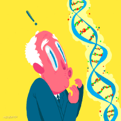
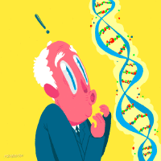

La genética conductual es la rama de la psicología que estudia como nuestros genes influyen nuestro comportamientoy habilidades.
La genética de la conducta se estudia desde finales del siglo XIX, cuando Francis Galton comenzó a plantearse si la herencia afecta a la conducta humana. Él sugirió algunos de los métodos más utilizados después en genética de la conducta humana (estudios sobre familias, estudios de gemelos y diseños de adopción) y llevó a cabo los primeros estudios sistemáticos con familias que mostraron cómo ciertos rasgos de comportamiento «se transmiten en familias».
La genética conductual no sugiere que nuestros genes determinen quienes somos, sino que se trata de una interacción compleja entre nuestros genes y el nuestro entorno. Este campo ha sido fundamental en la identificación de ciertos genes que estan relacionados con la ansiedad y la depresión, y nos permite detectar la probable aparición de enfermedades mentales en niños pequeños e incluso bebés.
No siempre una conducta con influencia genética debe ser innata por obligación. Dependiendo del entorno puede que se manifieste un gen o que permanezca latente. Esto significa que aunque los genes no pueden ser modificados, la conducta si puede en base al aprendizaje y experiencia.
Algunos de los factores genéticos hereditarios que más influyen en conductas complejas son:
- Cociente intelectual
- Creatividad
- Dificultad de la lectura
- Personalidad
- Extroversión
- Retraso mental
- Neurosis

Los casos más estudiados en este campo son los de los gemelos. En estos experimentos, se toman dos gemelos genéticamente iguales y dos gemélos que provienen de distinto cigoto, y se estudia las similitudes y diferencias entre ambos pares para estimar la influencia genética en características como la inteligencia o la agresividad.